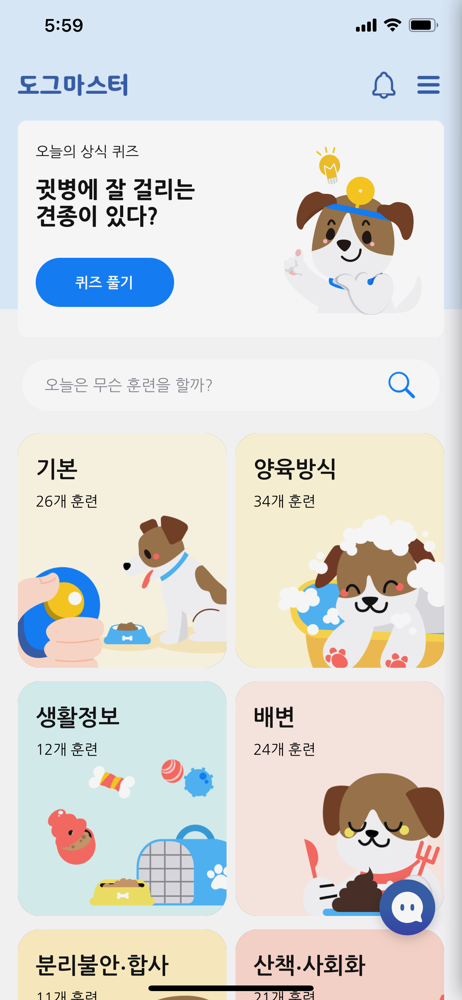
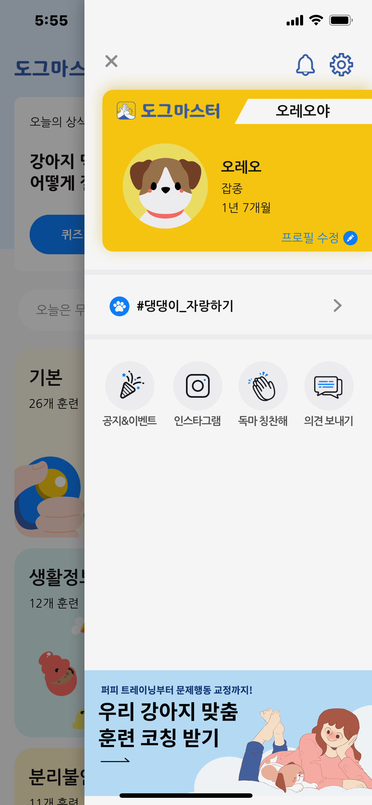
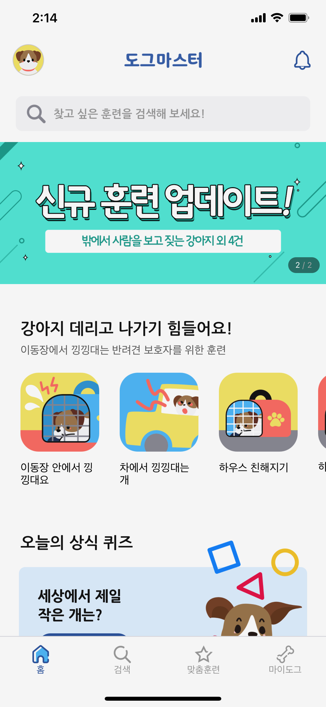
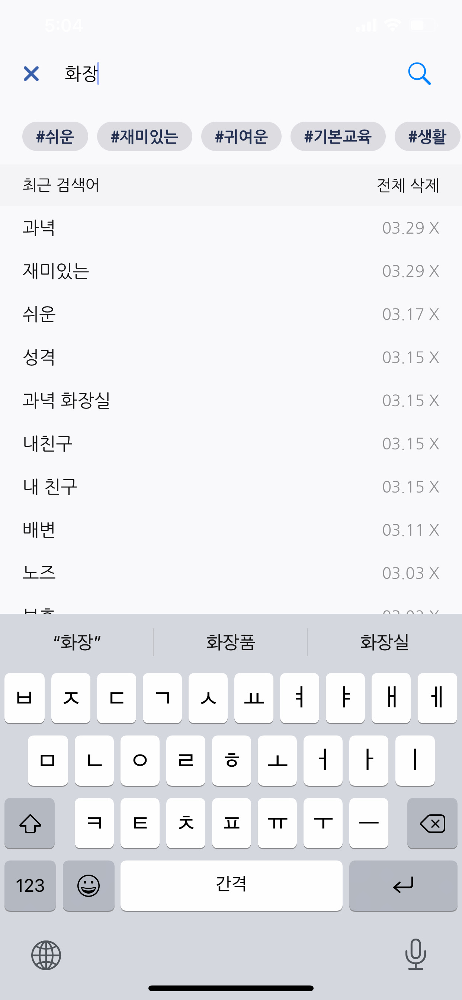
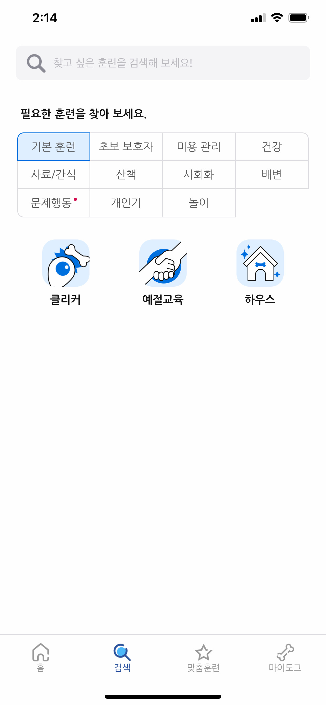
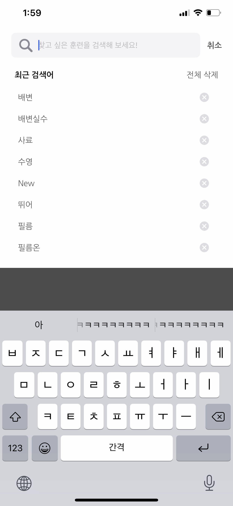

About Walky Doggy Inc.
Walky Doggy Inc. provides a service that easily delivers information on raising and training dogs tailored to help all dog owners in South Korea to raise dogs correctly through their mobile application called Dogmaster. We produce our own content and provide it for free free to make it easier to learn parenting and training information. Moreover, we are in the process of solving the concerns of beginner owners and behavioral problems of dogs through a service that customizes parenting and training information necessary for the life cycle of users and dogs based on data.
Overview
As the first UI/UX Designer hired at the company, I had to implement and reinforce the concepts and standards of Human-centered design principles. By collecting the existing user data and constructing a user flow map based on the current design, I was able to thoroughly evaluate the app, Dogmaster. With the thorough evaluation, I successfully pinpointed a few improvements aligning with Nielsen's Heuristics Evaluation and WCAG (Web Content Accessible Guidelines). The user flow helped our team to identify the unnatural transitions between screens and menus, allowing us to recreate the menu itself and implement a new menu structure of bottom-navigation. This allowed users to grasp the information at a glance rather than moving around pages to find the information that they want. In the midst of restructuring the menus and screens, I also reinforced the importance of accessibility and thus adjusted and designed each page to include components that are more accessible for the users.
Overall Changes
Role
UI/UX Designer
Research
Tools
Home Screen
Previous Design
Home Screen
Sidebar Menu Screen
Current Design
Home Screen with Bottom Navbar
Search Screen
Previous Design
Current Design
Search Screen
Search History Screen
